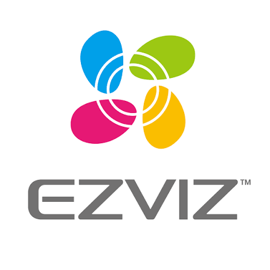
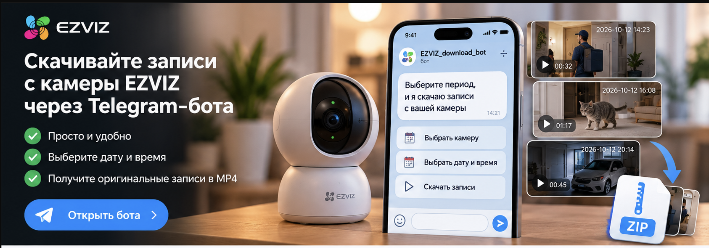

Добавьте камеру
Откройте бота, выберите язык, введите логин и пароль EZVIZ. Выберите найденную камеру и сохраните её под удобным именем.
/start
до 3 камер в одном боте
до 3 камер в одном боте

/ ARCHIVEНЕЗАВИСИМЫЙ БОТСкачайте видео с камеры EZVIZ с карты памяти без ручной записи экрана. Выберите время в Telegram-боте и получите отдельные MP4-клипы в ZIP.
Работает с записями на SD-карте, доступными вашему аккаунту EZVIZ. Для входа в бот понадобятся ваши учётные данные EZVIZ.
Три понятных шага. Даты и время выбирайте по часам самой камеры.
Откройте бота, выберите язык, введите логин и пароль EZVIZ. Выберите найденную камеру и сохраните её под удобным именем.
Выберите дату и время начала и конца. Один запрос охватывает не более трёх суток; бот покажет выбранный диапазон перед загрузкой.
Бот отправит отдельные MP4-записи, упакованные в ZIP-файлы до 45 МБ каждый. Скачайте файлы из чата на телефон или компьютер.
Для поиска используйте календарь и точное время. Если записей нет, бот сообщит об этом.
Иллюстрация сценария: камера, чат, отдельные записи и архив.

Бот ищет отдельные записи на SD-карте выбранной камеры, доступные через ваш аккаунт EZVIZ. Поддержка зависит от модели камеры и доступности архива.
За один запрос — нет. Для более длинного периода отправьте несколько последовательных запросов, каждый не более трёх суток.
Логин и пароль камеры хранятся на сервере бота в зашифрованном виде, пока камера добавлена. Сообщение с паролем удаляется после обработки. Временные видео удаляются после подтверждённой отправки ZIP. Удалить сохранённую камеру можно в боте.
Нет. Это независимый Telegram-бот, не связанный с EZVIZ. Официальные способы скачивания записей описаны в справке EZVIZ.
Если один клип превышает лимит ZIP в 45 МБ, выгрузка может быть неполной. Попробуйте выбрать более короткий период или воспользуйтесь официальным приложением EZVIZ.